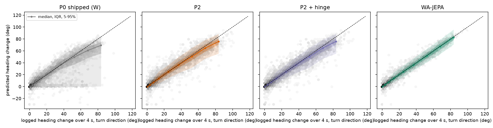
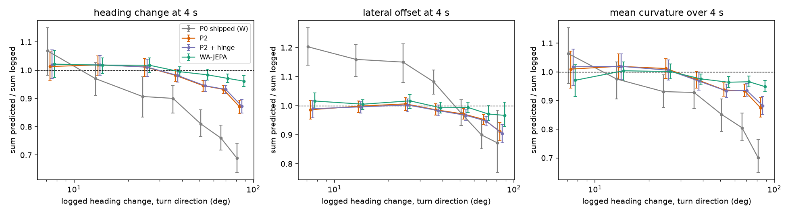
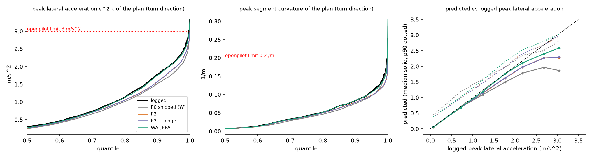
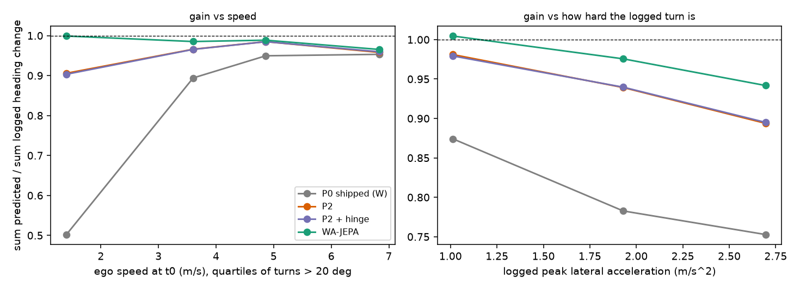
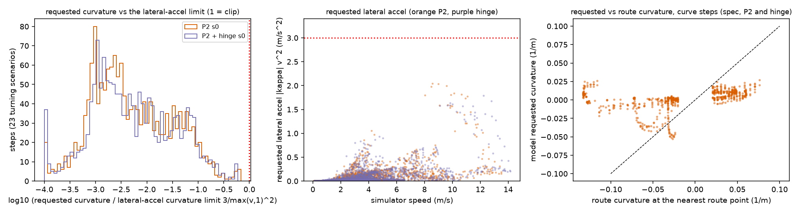

数据全部来自已有输出，没有跑模型。脚本 experiments/op_probe/scripts/opj_turn_gain.py，完整英文版结果见 experiments/op_probe/results/turn-gain.md。分箱与 op_probe 联合诊断一致（日志 4 秒航向变化小于 5°、5° 到 20°、20° 到 45°、大于 45°，左右分开），不确定性为按 136 个日志重采样的聚类 bootstrap。
增益定义为预测值对日志值过原点回归的斜率，或预测总和除以日志总和。下表是 4 秒航向变化的总和比值。
| 分层 | 片段数 | P0（W 帧） | P2 | P2 加 hinge | WA-JEPA |
|---|---|---|---|---|---|
| 5° 到 20°，左 / 右 | 1446 / 1146 | 1.00 / 1.02 | 1.02 / 1.01 | 1.03 / 1.01 | 0.98 / 1.07 |
| 20° 到 45°，左 / 右 | 1057 / 580 | 0.91 / 0.88 | 0.99 / 1.00 | 0.99 / 1.00 | 0.98 / 1.05 |
| 大于 45°，左 / 右 | 918 / 599 | 0.79 / 0.75 | 0.93 / 0.94 | 0.93 / 0.94 | 0.96 / 0.99 |
| 大于 20°，斜率及区间 | 3154 | 0.80 [0.76, 0.84] | 0.94 [0.93, 0.95] | 0.94 [0.93, 0.95] | 0.98 [0.97, 0.995] |
读法：增益在 45° 以内几乎为 1，之后轻微下降到 0.93，所有模型方向一致（WA 为 0.96 到 0.99）。按日志值分箱本身会带来向均值回归，所以 0.93 是真实饱和程度的上界。hinge 对增益没有影响。出厂 P0 确实欠转（0.75 到 0.79），P2 微调已经补回大部分。横向偏移（4 秒）大于 20° 时 P2 为 0.97，WA 为 0.99；2 秒处 P2 为 0.99。


| 量（转向方向） | 日志 p99 / 最大 | P2 p99 / 最大 | hinge p99 / 最大 | WA p99 / 最大 |
|---|---|---|---|---|
| 4 秒航向变化（度） | 79.8 / 103 | 76.0 / 94.7 | 76.2 / 94.7 | 79.1 / 99.4 |
| 峰值段曲率（每米） | 0.155 / 0.252 | 0.129 / 0.22 | 0.129 / 0.21 | 0.147 / 0.305 |
| 峰值横向加速度（米每二次方秒） | 2.69 / 3.32 | 2.45 / 3.22 | 2.45 / 3.12 | 2.62 / 3.33 |
预测分布整条尾部是日志分布乘以 0.90 到 0.95，P2 自己能到 3.1 到 3.2 米每二次方秒和 0.21 到 0.22 每米，和日志、WA 的最大值相邻，曲线在 3 米每二次方秒或 0.2 每米处没有变平。日志本身最高只到 3.3，训练目标即使在 3 附近封顶也只会影响最极端的 0.1%。

如果是横向加速度限制造成的封顶，欠转应随速度的平方增大。实际并非如此：P2 的相对欠转与起点速度的 Spearman 相关为 负 0.10（hinge 负 0.12，WA 正 0.07，P0 负 0.45），快一点反而略好。P2 按速度三分位（中位 1.9、4.2、6.4 米每秒）的增益为 0.92、0.98、0.96。按日志转弯的峰值横向加速度分三档（小于 1.5、1.5 到 2.5、大于 2.5）为 0.98、0.94、0.89；WA 为 1.00、0.98、0.94，曲线与 P2 平行、高出约 0.05。
残差结构：大于 45° 时 P2 的航向误差偏差为负 4.3°，均方根 10.9°（WA 为负 1.5° 和 9.9°）；偏移均方根 1.62 米对 1.52 米；欠转超过 30% 的片段占 6.4%（WA 2.2%）。P2 与 WA 的差距主要是离散度加上约 3° 的偏差，不是增益塌陷。

来源是每步日志里模型请求的曲率，以及仿真日志中 openpilot 横向链路的请求值、裁剪后值和实际值，不需要估计。用 lib/op_ctrl.py 在 CPU 上重放，得到与日志完全一致的裁剪步。
| spec，23 个转弯场景 | P2 种子 0 | P2 种子 1 | hinge 种子 0 | hinge 种子 1 |
|---|---|---|---|---|
| 被裁剪的步 | 3（0.19%） | 0 | 2（0.13%） | 1（0.07%） |
| 出现过裁剪的运行数 | 1 | 0 | 1 | 1 |
| 请求曲率最大值（限幅 0.2） | 0.065 | 0.051 | 0.061 | 0.090 |
| 请求横向加速度最大值（限幅 3） | 2.04 | 1.82 | 1.79 | 1.44 |
| 请求相对横向加速度限幅的最大比例 | 0.68 | 0.61 | 0.60 | 0.48 |
| 结束前 8 步内的裁剪数 | 0 | 0 | 0 | 0 |
全部 64 个场景的裁剪步占比为 0.08%、0、0.05%、0.03%。链路基本是直通：最大的请求也只用了横向加速度限幅的 68%。说明一处已声明的偏差：harness 把仿真速度送进裁剪，若按 1.25 倍的模型时钟计算，限幅会紧 1.56 倍，P2 种子 0 会有 4 步越限，其余为 0。exam 预设由 iLQR 跟踪位置，没有曲率链路；对其日志曲率用同一条链路重放，转弯场景的裁剪步占 0.00%、0.05%、0.00%、0.00%，同样不是封顶。
请求曲率对路线曲率的斜率（弯道步，距路线 3 米以内）在 spec 的四个模型上只有 0.09 到 0.10，中位速度 3.0 到 3.3 米每秒，13% 到 23% 的弯道步低于 2 米每秒。这不是转弯映射的增益：模型拿不到路线信息，这些步多半贴近失败；它只说明闭环失败发生时模型请求的曲率很小，远没有碰到任何限幅。仅作描述性参考。
